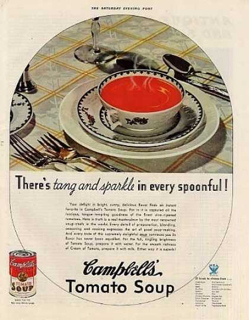
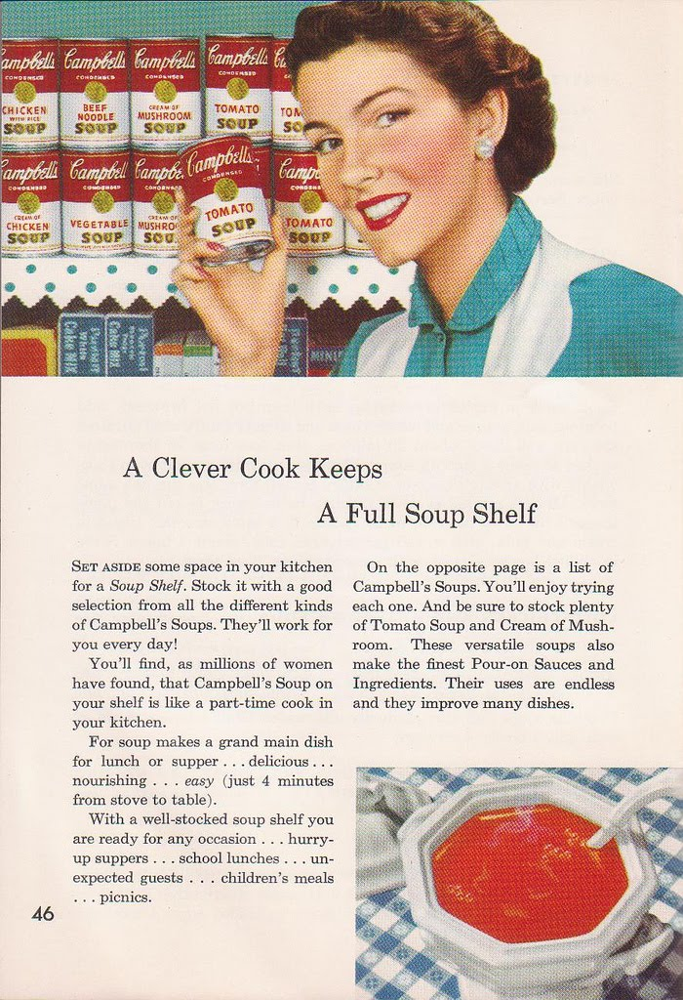

The American Way of Life
In the 1950s, all American households read one or more magazines per week. A typical magazine included new cooking recipes , tips for cleaning the house, beauty advertisements, the latest electronic equipments, how to find a new husband or simple love stories. The focus of Advertising and Magazines was portraying “an ideal lifestyle and image” rather than the product itself. For example Campbell soup, an icon of consumerism was represented in “the April 1934 Woman’s Home Companion” by a simple drawing of a bowl of soup. In 1950 their advertisement exemplified attractive women serving their “perfect family”. The rise of the mass culture was clearly shaped by the media of the time, advertisers and particularly, by the government. Therefore individuals were unconsciously driven by their choices, preferences and ideals which reflects the power of popular imagery and how it can be used as a submissive tool in a social context like the fifties.
Furthermore, targeting women and identifying them as a household consumers erected the cultural life of the 1950’s. Consumerism changed the lifestyle and the mentality of the whole nation. “Electronic media along with household products, frozen and canned food played perhaps the largest role in this development as million of people saw the same films and the same TV series, prepared the same recipes and cleaned their houses with the same products.”

